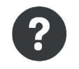
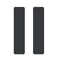
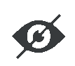
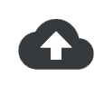

- 최근 업적
 최근 활동
최근 활동- 특수 기능
- 효성의 블로그
- 효성의 깃허브
 효성의 학교홈페이지
효성의 학교홈페이지-  효성의 링크드인
-  효성의 카카오스토리
 효성의 페이스북
효성의 페이스북 효성의 밴드
효성의 밴드-  효성의 그녀들
 효성의 사진들
효성의 사진들-  효성의 장점들
 효성의 단점들
효성의 단점들
- 라이브
최근 활동 효성의 학교홈페이지 효성의 페이스북 효성의 밴드 효성의 사진들 효성의 단점들최근 수정 시각: 2018-05-22 16:27:35
분류: 효성위키
|  |
이용 안내 효성위키의 이용 방법에 대해서는 규정과 도움말을 확인해 보세요. 특히 주의하셔야 할 부분은 이 문서에 모아 두었습니다. |
 |
게시판 공지사항 (문서 형태) · 그루터기 · 문의 · 신고 · 차단 소명 · 저작권 침해 삭제 요청 · 다중 계정 검사 요청 · 토론 문의 · 개발 문의 |
저작권 문의 저의 포트폴리오를 무단 사용하시면 혼납니다!. |
|
 |
임시조치 문의 dlgytjd0907@dgsw.hs.kr (투명성 보고서에 공개될 수 있으며, 임시조치가 아닌 문의에는 답변하지 않습니다.) |
| 효성위키 프로젝트 | |
 |
메신져에 지원하여 함께 협력합니다! 최근 신설된 프로젝트: c# 김밥나라 프로젝트, JSP 공부 사이트, 메신져 프로젝트 |
| 분류:토막글 · 이런 프로젝트가 필요하다 · 유지보수가 필요한 프로제트 · 개발기간이 짧은 프로젝트 · 분류:효성위키 프로젝트 | |
 효성위키의 규정효성위키의 도움말효성위키의 기능효성위키의 분류효성위키의 운영진
효성위키의 규정효성위키의 도움말효성위키의 기능효성위키의 분류효성위키의 운영진